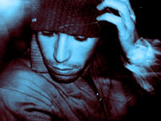

Rob Paterson
AFP / NIGHTWERKS
http://www.mixcloud.com/multiplemono
Rob Paterson is a multi-instrumentalist/producer/DJ from Stony Brook, NY. Coming from a background in classical and jazz trumpet, Rob applied what he learned from countless orchestral and theory classes to his own musical development. It was in college that he taught himself how to mix records and produce. Subsequent late nights in dank underground clubs and other dubious dwellings twisted and molded his sound as a DJ: dark; deep; delirious; somewhat Teutonic with a deranged bounce. The combination of his genre bending sound and high energy performance has helped him secure bookings in top clubs and parties around North America, including the Winter Music Conference, Robots [NYC], Club Circa [Toronto], and his current monthly residency at Nightwerks [Brooklyn].